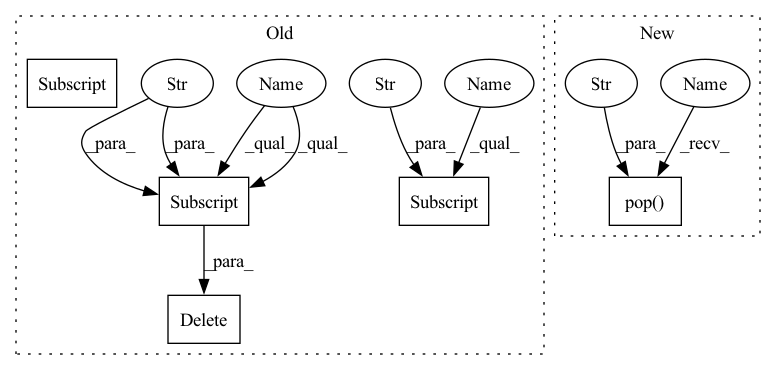

Pattern ID :6757
Before Change
elif opt_lower == "nvnovograd":
optimizer = NvNovoGrad(parameters, **opt_args)
elif opt_lower == "fusedsgd":
del opt_args["eps"]
optimizer = FusedSGD(parameters, momentum=args.momentum, nesterov=True, **opt_args)
elif opt_lower == "fusedmomentum":
del opt_args["eps"]
optimizer = FusedSGD(parameters, momentum=args.momentum, nesterov=False, **opt_args)
elif opt_lower == "fusedadam":
optimizer = FusedAdam(parameters, adam_w_mode=False, **opt_args)
elif opt_lower == "fusedadamw":After Change
elif opt_lower == "nvnovograd":
optimizer = NvNovoGrad(parameters, **opt_args)
elif opt_lower == "fusedsgd":
opt_args.pop("eps" , None)
optimizer = FusedSGD(parameters, momentum=args.momentum, nesterov=True, **opt_args)
elif opt_lower == "fusedmomentum":
opt_args.pop("eps", None)
optimizer = FusedSGD(parameters, momentum=args.momentum, nesterov=False, **opt_args)In pattern: SUPERPATTERN
Frequency: 3
Non-data size: 5
Instances Fragment ID: 23119328
Project Name: feng-lab/pytorch-image-models
Commit Name: 30ab4a1494a8c9f440be940297b31497e0cbf411
Time: 2020-10-31
Author: rwightman@gmail.com
File Name: timm/optim/optim_factory.py
M Class Name: AnonimousClass
N Class Name: AnonimousClass
M Method Name: create_optimizer(3)
N Method Name: create_optimizer(3)
M Parent Class:
N Parent Class:
M File Name: timm/optim/optim_factory.py
N File Name: timm/optim/optim_factory.py
M Start Line: 55
M End Line: 101
N Start Line: 55
N End Line: 101
Before Change
if "fused" in opt_lower:
assert has_apex and torch.cuda.is_available(), "APEX and CUDA required for fused optimizers"
opt_args = dict(lr=args.lr, weight_decay=weight_decay)
if hasattr(args, "opt_eps") and args.opt_eps is not None:
opt_args["eps"] = args.opt_eps
if hasattr(args, "opt_betas") and args.opt_betas is not None:
opt_args["betas"] = args.opt_betas
opt_split = opt_lower.split("_")
opt_lower = opt_split[-1]
if opt_lower == "sgd" or opt_lower == "nesterov":
del opt_args["eps"]
optimizer = optim.SGD(parameters, momentum=args.momentum, nesterov=True, **opt_args)
elif opt_lower == "momentum":
del opt_args["eps"]
optimizer = optim.SGD(parameters, momentum=args.momentum, nesterov=False, **opt_args)
elif opt_lower == "adam":
optimizer = optim.Adam(parameters, **opt_args)
elif opt_lower == "adamw":
optimizer = optim.AdamW(parameters, **opt_args)
elif opt_lower == "nadam":
optimizer = Nadam(parameters, **opt_args)
elif opt_lower == "radam":
optimizer = RAdam(parameters, **opt_args)
elif opt_lower == "adamp":
optimizer = AdamP(parameters, wd_ratio=0.01, nesterov=True, **opt_args)
elif opt_lower == "sgdp":
optimizer = SGDP(parameters, momentum=args.momentum, nesterov=True, **opt_args)
elif opt_lower == "adadelta":
optimizer = optim.Adadelta(parameters, **opt_args)
elif opt_lower == "adafactor":
if not args.lr:
opt_args["lr"] = None
optimizer = Adafactor(parameters, **opt_args)
elif opt_lower == "adahessian":
optimizer = Adahessian(parameters, **opt_args)
elif opt_lower == "rmsprop":
optimizer = optim.RMSprop(parameters, alpha=0.9, momentum=args.momentum, **opt_args)
elif opt_lower == "rmsproptf":
optimizer = RMSpropTF(parameters, alpha=0.9, momentum=args.momentum, **opt_args)
elif opt_lower == "novograd":
optimizer = NovoGrad(parameters, **opt_args)
elif opt_lower == "nvnovograd":
optimizer = NvNovoGrad(parameters, **opt_args)
elif opt_lower == "fusedsgd":
del opt_args["eps"]
optimizer = FusedSGD(parameters, momentum=args.momentum, nesterov=True, **opt_args)
elif opt_lower == "fusedmomentum":
del opt_args["eps"]
optimizer = FusedSGD(parameters, momentum=args.momentum, nesterov=False, **opt_args)After Change
if "fused" in opt_lower:
assert has_apex and torch.cuda.is_available(), "APEX and CUDA required for fused optimizers"
opt_args = dict(lr=args.lr, weight_decay=weight_decay)
if hasattr(args, "opt_eps") and args.opt_eps is not None:
opt_args["eps"] = args.opt_eps
if hasattr(args, "opt_betas") and args.opt_betas is not None:
opt_args["betas"] = args.opt_betas
opt_split = opt_lower.split("_")
opt_lower = opt_split[-1]
if opt_lower == "sgd" or opt_lower == "nesterov":
opt_args.pop("eps", None)
optimizer = optim.SGD(parameters, momentum=args.momentum, nesterov=True, **opt_args)
elif opt_lower == "momentum":
opt_args.pop("eps", None)
optimizer = optim.SGD(parameters, momentum=args.momentum, nesterov=False, **opt_args)
elif opt_lower == "adam":
optimizer = optim.Adam(parameters, **opt_args)
elif opt_lower == "adamw":
optimizer = optim.AdamW(parameters, **opt_args)
elif opt_lower == "nadam":
optimizer = Nadam(parameters, **opt_args)
elif opt_lower == "radam":
optimizer = RAdam(parameters, **opt_args)
elif opt_lower == "adamp":
optimizer = AdamP(parameters, wd_ratio=0.01, nesterov=True, **opt_args)
elif opt_lower == "sgdp":
optimizer = SGDP(parameters, momentum=args.momentum, nesterov=True, **opt_args)
elif opt_lower == "adadelta":
optimizer = optim.Adadelta(parameters, **opt_args)
elif opt_lower == "adafactor":
if not args.lr:
opt_args["lr"] = None
optimizer = Adafactor(parameters, **opt_args)
elif opt_lower == "adahessian":
optimizer = Adahessian(parameters, **opt_args)
elif opt_lower == "rmsprop":
optimizer = optim.RMSprop(parameters, alpha=0.9, momentum=args.momentum, **opt_args)
elif opt_lower == "rmsproptf":
optimizer = RMSpropTF(parameters, alpha=0.9, momentum=args.momentum, **opt_args)
elif opt_lower == "novograd":
optimizer = NovoGrad(parameters, **opt_args)
elif opt_lower == "nvnovograd":
optimizer = NvNovoGrad(parameters, **opt_args)
elif opt_lower == "fusedsgd":
opt_args.pop("eps" , None)
optimizer = FusedSGD(parameters, momentum=args.momentum, nesterov=True, **opt_args)
elif opt_lower == "fusedmomentum":
opt_args.pop("eps", None)
optimizer = FusedSGD(parameters, momentum=args.momentum, nesterov=False, **opt_args) Fragment ID: 23119329
Project Name: feng-lab/pytorch-image-models
Commit Name: 30ab4a1494a8c9f440be940297b31497e0cbf411
Time: 2020-10-31
Author: rwightman@gmail.com
File Name: timm/optim/optim_factory.py
M Class Name: AnonimousClass
N Class Name: AnonimousClass
M Method Name: create_optimizer(3)
N Method Name: create_optimizer(3)
M Parent Class:
N Parent Class:
M File Name: timm/optim/optim_factory.py
N File Name: timm/optim/optim_factory.py
M Start Line: 55
M End Line: 101
N Start Line: 55
N End Line: 101
Before Change
current_time = time.time()
if "groups" in kwargs:
kwargs = kwargs.copy()
if self._task == "rank":
kwargs["group"] = group_counts(kwargs["groups"] )
// groups_val = kwargs.get("groups_val")
// if groups_val is not None:
// kwargs["eval_group"] = [group_counts(groups_val)]
// kwargs["eval_set"] = [
// (kwargs["X_val"], kwargs["y_val"])]
// kwargs["verbose"] = False
// del kwargs["groups_val"], kwargs["X_val"], kwargs["y_val"]
del kwargs["groups"]
X_train = self._preprocess(X_train)
model = self.estimator_class(**self.params)
model.fit(X_train, y_train, **kwargs)
After Change
current_time = time.time()
if "groups" in kwargs:
kwargs = kwargs.copy()
groups = kwargs.pop("groups" )
if self._task == "rank":
kwargs["group"] = group_counts(groups)
// groups_val = kwargs.get("groups_val")
Fragment ID: 23119348
Project Name: microsoft/flaml
Commit Name: f48ca2618fed2193ffa929af7a44d3031dfb16dd
Time: 2021-10-08
Author: wang.chi@microsoft.com
File Name: flaml/model.py
M Class Name: BaseEstimator
N Class Name: BaseEstimator
M Method Name: _fit(3)
N Method Name: _fit(3)
M Parent Class:
N Parent Class:
M File Name: flaml/model.py
N File Name: flaml/model.py
M Start Line: 85
M End Line: 95
N Start Line: 84
N End Line: 102
Before Change
super().__init__()
// save locals to take care of some hyperparameters for cascading DDPM
self._locals = locals()
del self._locals["self"]
del self._locals["__class__"]
// for eventual cascading diffusion
self.lowres_cond = lowres_condAfter Change
super().__init__()
// save locals to take care of some hyperparameters for cascading DDPM
self._locals = locals()
self._locals.pop("self" , None)
self._locals.pop("__class__", None)
// for eventual cascading diffusion
Fragment ID: 23119305
Project Name: lucidrains/imagen-pytorch
Commit Name: ff0d39fa9764f1aff88feb5a1624ef19e50bcd43
Time: 2022-05-28
Author: lucidrains@gmail.com
File Name: imagen_pytorch/imagen_pytorch.py
M Class Name: Unet
N Class Name: Unet
M Method Name: __init__(1)
N Method Name: __init__(2)
M Parent Class: nn.Module
N Parent Class: nn.Module
M File Name: imagen_pytorch/imagen_pytorch.py
N File Name: imagen_pytorch/imagen_pytorch.py
M Start Line: 820
M End Line: 822
N Start Line: 819
N End Line: 821